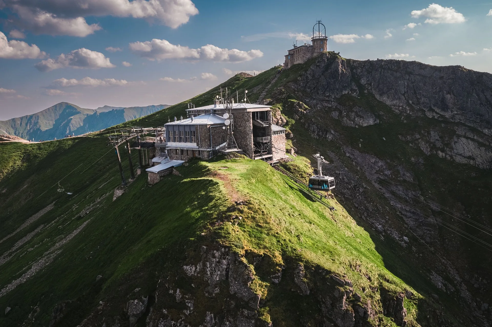
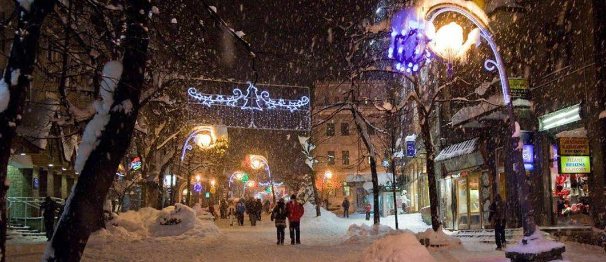
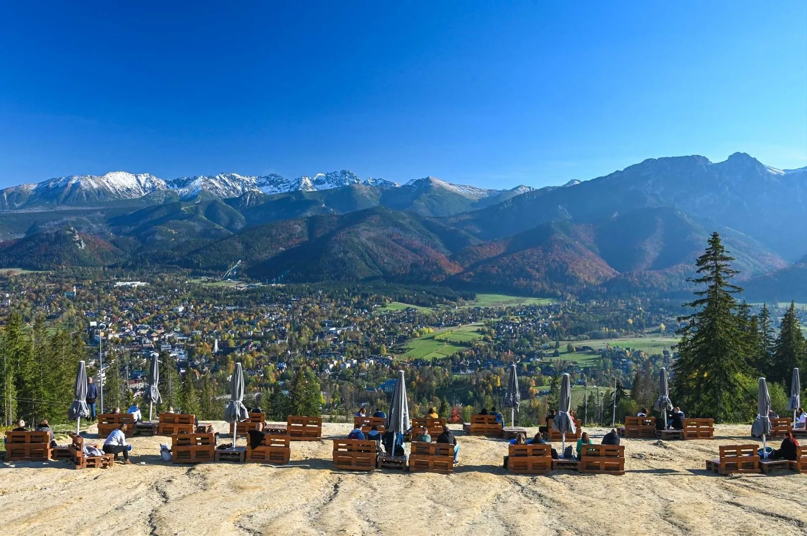
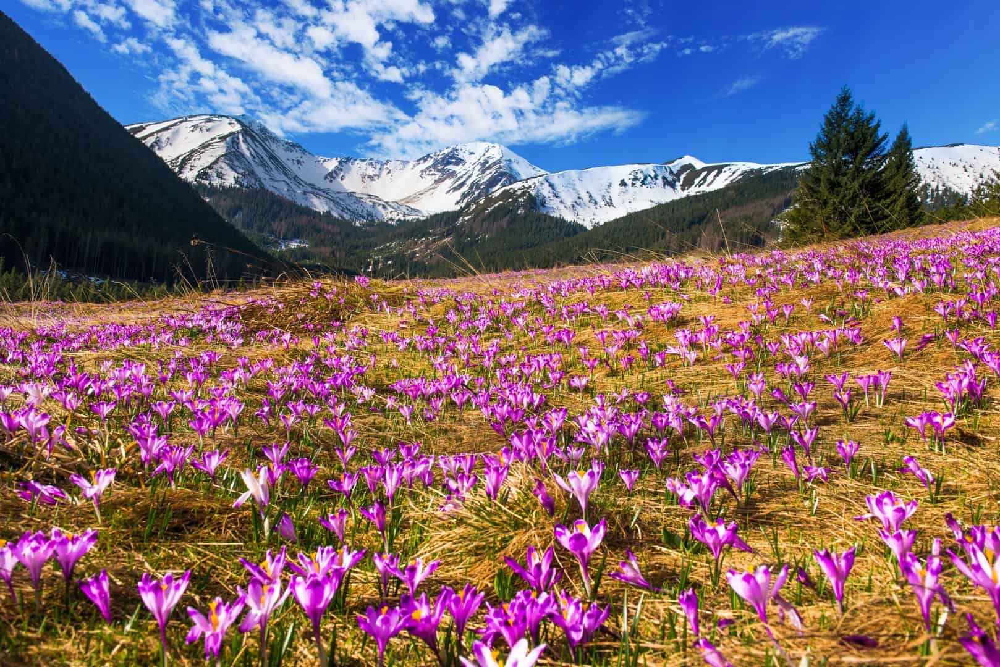
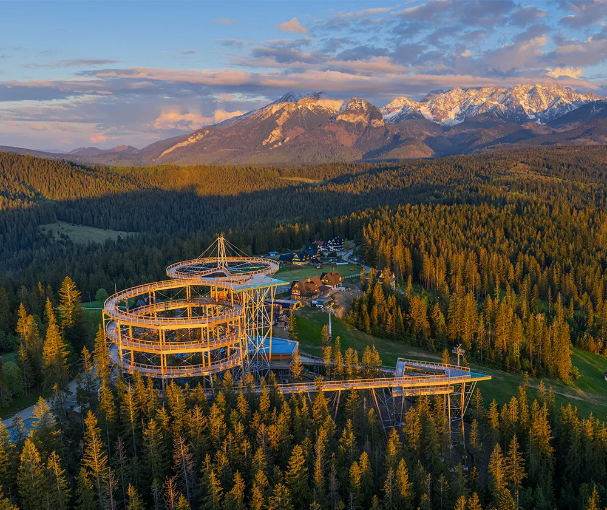
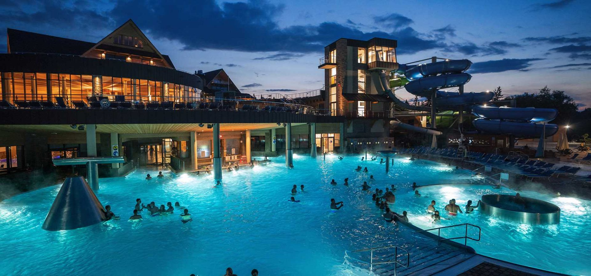

Kasprowy Wierch, jak się dostać i co zobaczyć
Kolejka linowa na Kasprowy Wierch to jedna z największych atrakcji Zakopanego. Dowiedz się jak dojechać spod Willi Storczyk i co Cię czeka na szczycie.
Czytaj więcej
Przewodnik
Odkryj najpiękniejsze miejsca w Tatrach i okolicach. Nasze wskazówki dla Gości Willi Storczyk.

GóryKolejka linowa na Kasprowy Wierch to jedna z największych atrakcji Zakopanego. Dowiedz się jak dojechać spod Willi Storczyk i co Cię czeka na szczycie.

CentrumDeptak Krupówki to wizytówka Zakopanego, restauracje, sklepy z oscypkiem, góralska muzyka i niepowtarzalny klimat. Sprawdź co warto zobaczyć.

WidokiKolej linowa na Gubałówkę oferuje zapierający dech widok na całe Zakopane i Tatry. Idealne miejsce na rodzinny spacer o każdej porze roku.
Autobusy, ceny biletów, miejsca na narty i jak sprawnie poruszać się po Zakopanem bez samochodu. Wszystko co musisz wiedzieć przed przyjazdem.

RowerDroga pod Reglami, Dolina Chochołowska i Dolina Gąsienicowa. Jedyne trasy gdzie rower jest dozwolony w TPN, z opisami, opłatami i wskazówkami.

WidokiPlatforma widokowa w kształcie serca z panoramą na Tatry. Jedna z najchętniej fotografowanych atrakcji w okolicach Zakopanego. Jak dojechać i co zobaczyć.

RelaksChochołowskie, Zakopiańskie, Bukowina i Gorący Potok Szaflary. Przewodnik po czterech najlepszych kompleksach termalnych dostępnych z Willi Storczyk.